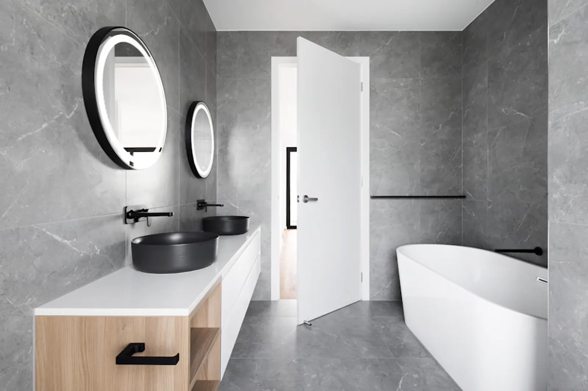
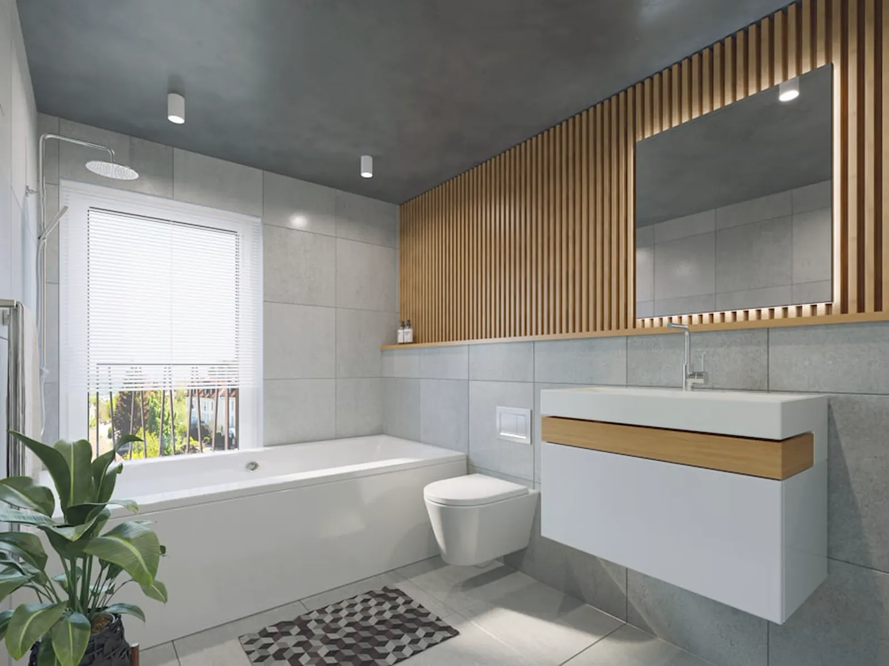

Travertin
Pierre naturelle, carrière de l’Hérault. Chaque dalle est choisie sur place.

Conception, matériaux, pose. Une seule équipe, du premier croquis à la dernière finition.

Relevé sur place, plan coté, deux propositions d’implantation. Rien n’est commandé avant votre accord.

Choisies avec vous, en atelier, en main. Une pierre ne se décide pas sur un écran.

Date de début et date de fin, écrites au devis. Le chantier est protégé et nettoyé chaque soir.

Reprendre les joints, régler ce qui a bougé. C’est compris dans le prix, personne ne le demande.
Pierre naturelle, carrière de l’Hérault. Chaque dalle est choisie sur place.
Robinetterie apparente. Il se patine avec le temps, c’est voulu.
Menuiserie dessinée puis fabriquée par un atelier de Béziers.
Basse température, sous la pierre. Pieds nus en février.
Paroi fixe ou verrière, découpée d’après le relevé de la pièce.
On vient prendre les mesures, on dessine deux implantations, et on chiffre ligne par ligne. Sans engagement, et sans qu’un seul matériau soit commandé avant votre accord.